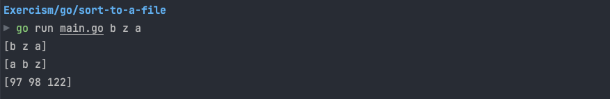

Belajar sorting sebuah string dari argument terminal dan tulis ke sebuah file.
Expected Output
Command:
go run main.go orange banana appleResult:
cat sorted.txt
apple banana orangeImplementation
package main
import (
"fmt"
"io/ioutil"
"os"
"sort"
)
func main() {
// get all arguments
items := os.Args[1:]
if len(items) == 0 {
fmt.Println("Send me some items and I will sort them")
return
}
// String slices are sortable using `sort.Strings`
sort.Strings(items)
var data []byte
for _, s := range items {
// append a string to a byte slice
data = append(data, s...)
}
err := ioutil.WriteFile("sorted.txt", data, 0644)
if err != nil {
fmt.Println(err)
return
}
}Output Example
Key Concepts
- Using os.Args untuk mengambil command line arguments
- sort.Strings() untuk mengurutkan string slice
- ioutil.WriteFile untuk menulis ke file
- Permission 0644 untuk file yang dibuat
Source
Code adapted from: Learn Go Project